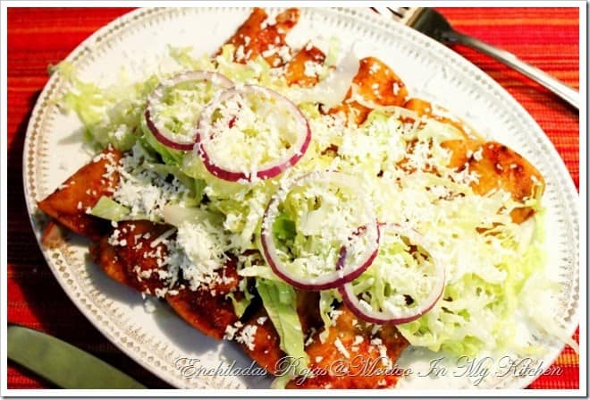

Enchiladas rojas

¿Qué son las enchiladas rojas?
Las enchiladas es un típico plato mexicano que se elabora con tortilla de maíz, bañada en una salsa, picante o no,
utilizando un chile en su preparación. Dependiendo del estilo del platillo, son sus ingredientes, se pueden
construir hasta 100 tipos de enchiladas.
El platillo tiene su origen en las civilizaciones precolombinas, presente incluso en el Códice Florentino menciona
la palabra chillapitzalli, la cual se conforma de la palabra náhuatl chilli, que significa chile, y de tlapitzalli
que significa flauta, es decir, flauta enchilada, descrita en el mismo texto como platillo de tortilla y chiles.
Ingredientes
- 4 chiles guajillo (abiertos, limpios y sin semillas)
- 4 chiles anchos (abiertos, limpios y sin semillas)
- 2 dientes de ajo picados
- 1/4 cucharadita de oréganosexo mexicano
- Sal y pimienta al gusto
- 12 tortillas de maiz
- 2 tazas de carne deshebrada de cerdo o pollo
- 1 1/2 taza de queso fresco desmoronado
- 1/2 taza de cebolla blanca finamente picada
- 1/3 de taza de aceite vegetal
Instrucciones
- Vamos a empezar con la salsa: Tuesta ligeramente los chiles en un comal caliente, presionándolos con la ayuda de
una espátula, pero asegurándote de no quemarlos. (Este paso toma sólo unos segundos en cada lado).
- Una vez asados los chiles colócalos en una cacerola con agua y cocínalos a fuego lento durante 15 minutos, o
hasta que estén blandos.
- Retira la olla del fuego y deja enfriar los chiles durante 10 o 15 minutos. (Recuerda que éstos deben estar
suaves y blandos).
- Después de que los chiles se hayan enfriado, escúrrelos y colócalos en la licuadora junto con los dientes de
ajo; añade ½ taza de agua limpia y licua hasta obtener una salsa suave. (Si la salsa está muy espesa o no se
molieron bien los chiles, es necesario pasarla por un colador fino). Sazona con el orégano, la sal y la pimienta.
- Precalienta el horno a 350oF (180oC) para mantener las enchiladas calientes mientras terminas de ensamblarlas.
- En un sartén grande agrega las 2 cucharadas de aceite vegetal y caliéntalo a fuego medio. (Ve añadiendo el
aceite poco a poco — según sea necesario — mientras fríes las tortillas, ya que si lo agregas todo a la vez las
tortillas lo absorberán y se romperán).
- Sumerge las tortillas — una a una — en la salsa hasta que ambos lados se mojen bien.
- Después coloca la tortilla en el sartén con el aceite caliente y fríe por ambos lados. (Esto sólo tarda unos
segundos). Coloca la enchilada en un plato. Agrega más aceite al sartén conforme se necesite y continúa con el
proceso de freír las tortillas: primero las pasas por la salsa y después por el aceite. Coloca dentro del horno
precalentado el plato donde estás poniendo las enchiladas para mantenerlas calientes mientras terminas de freír el
resto de las tortillas.
- Para servir las enchiladas, primero coloca el relleno de tu elección en el centro de la tortilla y luego dóblala
o enróllala como se observa en la foto de arriba.
- Espolvorea las enchiladas con el queso y la cebolla; agrega cualquier otra guarnición a tu gusto, y… ¡a
disfrutar!